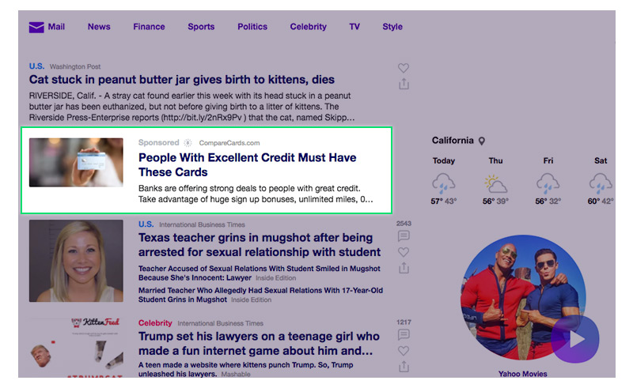
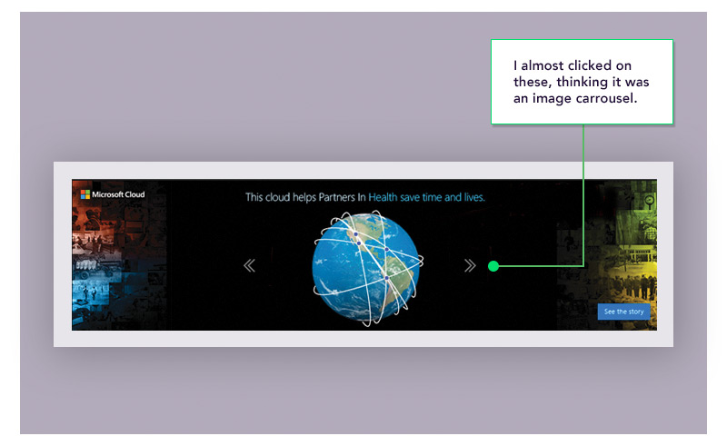
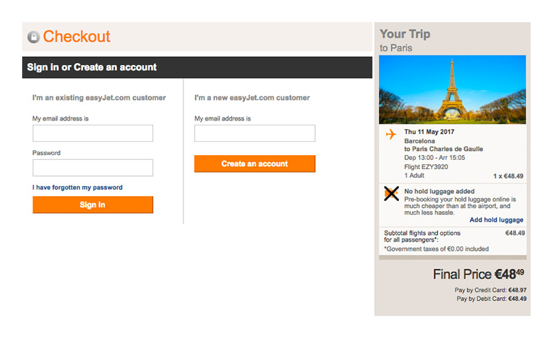
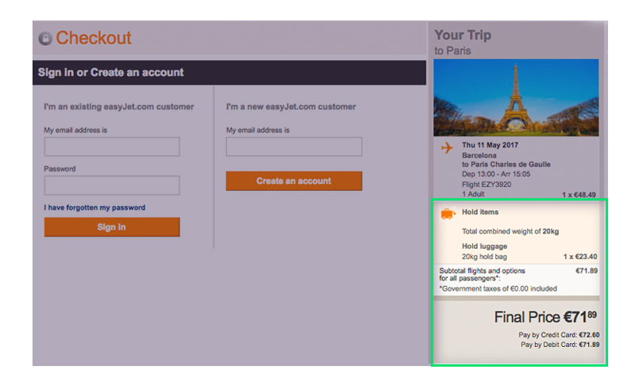

Have you ever been tricked by a website? Most of us can recall when LinkedIn mysteriously bombarded our contacts with emails. Probably the only thing more frustrating than the mass distribution of emails was the mass confusion – why did this happen? As it turned out, LinkedIn utilized tactics to get users to share Google account information during the sign up process. This incident has become a classic case of dark patterns, a not so obvious form of UX strategy practiced by those whose goal is to exploit human behavior for alternative reasons.
Now, LinkedIn is a great social networking platform and their value easily overshadows some of the onboarding tactics displayed. But here’s the thing: the line between what defines a dark pattern and a good strategic user experience is often very thin. As UX strategists and designers, how do we maintain our noble dedication to users while simultaneously coming up with creative ways to drive conversion? Put more simply, when does an idea or design become, well, dark?
Camouflaging Digital Ads
One of the most conspicuous types of dark patterns is known as “disguised ads”. Disguised ads are sneaky web advertisements designed specifically to fool users into clicking them. One way to do this is to camouflage them with other elements of a webpage. Yahoo, for example, has utilized this tactic by intentionally designing ads to look exactly like article elements. In addition, the typical components of an ad are obscured: the “sponsored” text is colored in faint gray font, and the ability to close the ad is only available on hover. It’s clear that these virtual landmines were designed specifically for Yahoo’s website, as these are not the typical digital ads seen on the web.

“Disguised ads” can also imitate important calls-to-action. In the example below, the main call-to-action on the web page is a green download button. But which button is the real one? Notice that there are two neighboring ads that take on a strikingly familiar form. Both have the word “download” and an arrow facing downward, and both are colored in green, just like the real one. Suddenly, a simple task becomes confusing. Is this just a coincidence? Hardly. Dark pattern designers know that by making ads look like important elements, users will click on them.
Now, this isn’t to say that all ads are evil. Many companies use virtual ads to spread brand awareness and drive quality traffic to a web property. But spreading awareness should be done in a more honest and transparent fashion. The image below shows an example of a Microsoft Cloud “disguised ad” on the Forbes website. This ad contains navigation arrows, elements that are commonly found on image carousels. As far as what the ad is trying to portray, these arrows serve absolutely no purpose. Yet, if your curiosity leads to you click on one of them, you’ll immediately be launched into a Microsoft Cloud page.

Pushing Users to an Action…Without Users Noticing
Dark patterns often take advantage of human psychology. What is the one thing that everyone dreads on the web? You guessed it: forms. No one likes to sit around filling out lengthy, life-impeding forms. Dark pattern practitioners understand this, and exploit this psychology in many ways. One of them is purposefully adding text in areas where users are least likely to pay attention. The example below shows the first page in Alibaba’s sign up form. At first glance, it looks harmless. But as you approach the last step – the required checkbox that ensures users abide by a company’s terms and policy – something odd happens. If you were treading carefully through this process, you would notice that the very last line states “Receive emails related to Alibaba.com membership and services.” The dark pattern? Agreeing to Alibaba’s user agreement and receiving promotional emails are part of the same deal – you have no way to opt out of receiving emails if you wish to proceed to the next step. Most people would not care to notice, as it’s carefully tucked under a very familiar looking “agree to terms” checkbox. But even if you did notice, what could you do? As a new user, you are coerced into receiving emails that you may have absolutely no interest in.
Not so optional selections
The last example in this post is known as a roach motel. In a roach motel dark pattern, the design intentionally makes it very easy to get into a situation that is very hard to get out of. The “Add Holding Luggage” functionality on EasyJet’s website illustrates a classic example of this in the buy ticket flow. The process starts off like most travel sites: you fill out a form on the homepage, click a button, and arrive at a multi-step process that eventually leads you to the end of your transaction. However, things quickly start to look suspicious…
First, EasyJet does not clearly communicate if the additional products are required. Title text such as “Add your flight options” and “Select Seats” make it seem more like required customization than optional purchases. The page is also crowded with orange call-to-action buttons, making it harder to discern the “Continue” button. Dark patterns have clearly started to flood in. It’s also evident that EasyJet is trying to push the “hold luggage” product out to the user as much as possible. On this page alone, it’s mentioned in 3 locations in 3 different ways. It becomes obvious that accepting “no” for an answer is not what EasyJet encourages.
The real dark pattern occurs near the end of the buy ticket flow. In the “Your Trip” box on the Checkout page, a large black “X” crossing out a luggage icon immediately draws the user’s attention. The text beside it reads “Pre-holding your hold luggage online is much cheaper than at the airport, and much less hassle.” This seems like an obscure description. How much luggage can I pre-hold? How much would I be saving exactly? Why is this pre-hold luggage feature so important? Is there a luggage weight limit? With all these questions in mind, the user inevitably seeks answers.

The only thread of hope is a mysterious “Add hold luggage” link. Once clicked, however, the ultimate trap is activated. That’s right – clicking this link adds the hold luggage fee to your total. You are now suddenly committed to paying a mysterious fee of $23.40. The only way to get out is to start the entire process over, but dark pattern designers know that people can be impatient, and that there is a good chance they will pay the price because they have invested the time and want to get the process over with.

Think of the user – stay transparent
With great power comes great responsibility. UX strategists and web designers alike have the ability to essentially create and influence the user’s entire experience in various ways. So, it’s our duty to put the user’s interests and concerns in the forefront of everything we do. For the vast majority of us, even in tough times, the thought process needs to always include thinking about what is best for the user. When we start prioritizing business over the ones who give us business, the long-term effects may be devastating. Dark patterns may not always reveal themselves immediately. But sooner or later, they will always be exposed.
Author – Richard Chen